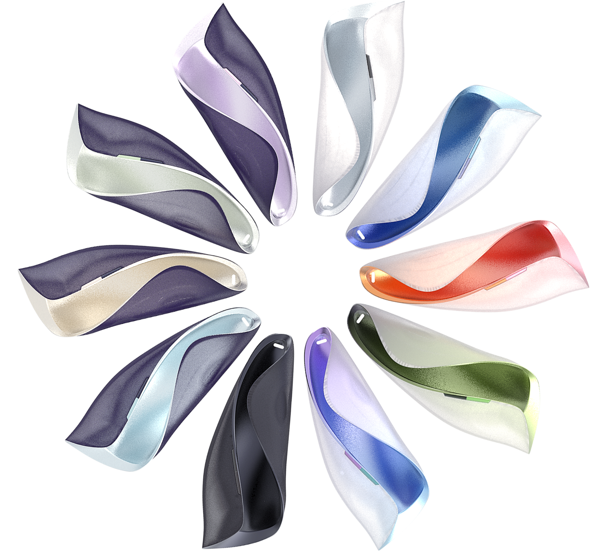
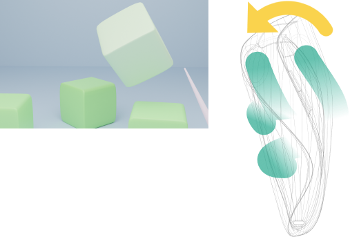

The mouse has become one of the greatest inventions for the past 100years. With gentle press and free movement, people interact with the 2D interface like what they do on the desktop in the real world. The subtle mechanic sound in every mouse notice people the completion of every manipulation they trigger. This builds the close and intuitive interaction between people and computers and lasted for multiple years as the interaction principle with all the interfaces on PCs.
Since XR has become a hotspot nowadays, many corporations are attempting to make controllers to create the interaction principle with the virtual environment, such as Oculus Quest, Pico Neo. However, since the form and holding patterns compromises on different limitations, people mistakenly make some misoperation during the usage.
As a result, we try to explore on a handheld device to make people intuitively interact with the virtual environment and object and make this sustainably reliable in the future.
2021.6.1-2021.6.20
Highly integrative field of Technoloy
XR interaction promotes close connections between humans and different technologies or sensors since people get everything informative with their haptic perception and vision. We notice that many corporations apply emerging technologies to guarantee the feedback so that they select technologies in a wide range: some have over 200 sensing points, some simulating the precise touch with ground power-support components.
With emerging technologies, some corporations have created some amazing feedback such as the simulation of the center-of-gravity shift. In sum, we could draw from the lab equipment and market products that roughly speaking, with the improvement of feedback, it costs more technology integration and consideration. Some technologies of novelty but destination-unknown are applied to give some interesting feedback.
It remains unknown whether these products with emerging technology would still exist 5 years or 20 years later.
Haptic glove prototype from Meta
Goal
Make a mouse in XR
Since the mouse represents the principle to interact with 2D world, we want to have a reliable way to interact with 3D environment. To achieve this, we need to know how many manipulations would the XR mechanism need to complete general operations. And it's also essential to research different technologies since prospects of them determine whether that would still work and have robust development years later.
Therefore, we have several problems to solve:
1.Define the orders that is essential in virtual environment ?
2. What would human behave in their interaction with real object ?
3. Which technology is most suitable are sustainably reliable to achieve the expected operation of humans on device?
My role
I did all of the research and insights, including the behavior research, literature review and some review on books related to tangible and haptic interaction. To better capture the principles hidden behind people's behavior, I defined the insights of people's pattern of hand manipulation.
I led the industrial design. I led the probe , to explore possible design areas based on the insights and drew further insights from it and then directed the sketch and model refining to define the design semantic.
I made the rapid prototype by integrating the 3D-printing materials and sensors . I also connected the Arduino and Unity by defining a new way to make the gyroscope act like the embedded manipulation of mouse. The data transmission was realized to make the object property in correspondence with the data caught by the sensor from Arduino.
Kick Off
How would you hand be naturally?
The best way to make the most of technology is to have knowledge of human and humans' behaviors. We had some observations about how our hand would be: Everybody has several natural gestures when they are empty-handed, when they are catching something or when they are supporting themselves with hands opposed to a wall. We tried to extract the principles behind people's countless casual behaviors.
Behavior Research examples
Preliminary insights from behavior observation
We observed the gesture when we hold the object and when we hold nothing to get the preliminary insights that hands follows.
Fingers' Matching
During our holding it, our 5 fingers work collaboratively. With thumb on one side and the other 4 fingers on the opposite side, They act as interaction force to hold the object.
Volume Perception
We increase our force to compress the light clay. With the increased compression, thumb and index finger are close and we perceive the volume by hands' touching on the surface.
5 Finger Clench
We grab the object by the compression of 5 fingers, the harder we are grabbing, The more we clench on it. Also, by the surface-perpendicular force we apply from fingertip to the object, the clench generates the friction.
Discovery
Changes after holding remain to be discovered.
Since we already know the principle of holding, how would people move? Would they throw? Would they change fingers used from an order to another? Why are these instructions obeyed by users?
We realized that when people are transferred from reality to the virtue, from static states to dynamic states, their manipulations would have more features that remain to be discovered.
Therefore, we integrated the literature research and behavior research to get to know further principles humans follow.
Literature review on Haptic & MR
We researched on the virtual environment . It shows that in mixed reality, beside 2D menu/navigation, we have 3D objects available on the ground or in the air. The manipulations are classified to manipulate the object just like the real world, or to turn on the functional menu/ properties. Once the menu/ info details are presented, click could be applied to make further instructions. Therefore, we could classify as follows:
Deeper Insights
Reframe behavior to direct technology
To realize such manipulations, we need to define and select appropriate technology and engineering to realize it. And it's essential that when we interact with an artifact, a cycle is built to link human's action and technology's reaction.
Cycle between human and artifact
As a result, we tried to reframe the hand manipulations we mentioned above to best match technologies. We found 6 patterns that hands would follow.
Therefore, we integrated the literature research and behavior research to get to know further principles that humans follow.
Literature review on Haptic & MR
We researched on the virtual environment . It shows that in mixed reality, beside 2D menu/navigation, we have 3D objects available on the ground or in the air. The manipulations are classified to manipulate the object just like the real world, or to turn on the functional menu/ properties. Once the menu/ info details are presented, click could be applied to make further instructions. Therefore, we could classify as follows:
Holding & Motion
Holding and motion are the basic manipulation. With 2 manipulations above, we move every object.
Volume Perception
Apart from holding & motion, throwing and placement makes the object released from hand, motionlessly or with high speed.
Complicated Manipulations
More detailed manipulations, such as opening the box, weaving on clothes etc. are complicated and vary widely according to the specific structure and usage. These manipulations could be packaged as a function in the virtual environment that might be the main function or one of the functions of an object.
Based on this, we generated a principle for general interaction in virtual environment.
principle for general interaction
We reframed the behaviors to direct the technology in the way that most fits human behavior.
Continuously varying Compression
When holding the object, people compress by press their fingers on the artifact. Intuitive behavior indicate continuously changing compression, and that is difficult for traditional mechanical button.
Perceive volume at the limit of compression
Meanwhile, the border of compression is the volume perception, Compression requires limit by support of hard surface of some material.
Nothing but moving
Acting as proxy of virtual object, the artifact’s movement and direction need capturing. When people move it, they do nothing but capture so extra buttons like mechanical buttons are redundant.
Throwing
In the real world, throwing is generated by people’s release during movement, with objects driven by the inertia to move toward the original tendency.
Confirm with Gentle point
Subconsciousness-driven preview suggests an easy gesture to act and manage it by a gentle point. And complicated instructions are combined with several gentle points on the menu to confirm.
We accordingly selected the appropriate sensors to generate it.
Model & Material
Flexible Glue 3D-Printing
Therefore, we proposed a flexible glue 3D printing to make the action could cause continuously alter the modeling.
Resine 3D-printing
Thus, we proposed a resine 3D printing to provide required hardness.
Model integration
By compression and final contact from palm, we perceive the volume and limit the increasing compression and corresponding deformation of flexible glue material, which is outside the resine material
Sensors
Linear Motor
As a result, we could draw easily that the force change should be captured precisely and continuously with the aid of piezoelectric film, that is exact, oblate to set.
Piezoelectric film
As a result, we could draw easily that the force change should be captured precisely and continuously with the aid of piezoelectric film, that is exact, oblate to set.
Gyroscope
Along with the movement, we capture the tendency with the aid of gyroscope, sensing both the moving direction and accelerated speed from triaxiality. To map the natural movement of artifact to the virtual object.
Prototype
we made a prototype to make the self-made integration have control of the virtual environment in Unity. We base the communication on the Arduino and Unity to connect components’ alteration and object’s data. Along with technique, we integrate the technology successfully.
Further Consideration
We abandoned some perceptions by technology research.
It's clear that a good technology that applies universally to humans should be able to have a prosperous development to avoid potential sluggishness resulting from limit from technology, theory and precondition.
During our process of technology research, we have found that many other interactions would be considered, saying weight, center of gravity, roughness etc.—— We don't really know whether such perceptions would be among the general operations, so we depend our considerations on current researches.
By further research into tangible and haptic interaction, we found that different technologies are applied to explore human-artifact interaction.
Research emphasis distribution
Drawing from the chart above, we found that researchers focus on exploration of different body interfaces(head, hand, wrist, skin etc.). Despite some other technologies such as fabric or pneumatic are employed, researchers still emphasize more on reconstruction of stable technologies and engineering. Also ,since many perception are noticed, we need to clarify the technical limitations of these perceptions.
Shape proxy
Current researches' exploration on shape proxy has been limited to some certain shape, difficult to simulate different shapes in the meantime.
Friction
Friction damages people's dexterity of hands.
Center of Weight
Simulation of center-of-weight shifting has received great attention. But the weight distribution, in terms of technical structure, occupies a great technical complexity in order to ensure the balancing weight or the particles to have obvious change.
Pictures are from Teng et al., Chen et al., Zenner et al.
Therefore, these perceptions are abandoned by us to be the ubiquitous interaction in our device.
Reframe the problem
Nature of humans and possibilities of technologies jointly defines a device.
Many devices dismiss humans' natural action, and depends the possibility on some challenging technologies. This caused many wrong connection between human and technology selection
We need to define an artifact.
It follows humans.
It directs technology.
It is a life.
Our vision suggests that this artifact, besides connecting humans and technology, has its own definition that could be beyond a tool but a way to be remembered. We designed a Surprite, a handheld device of bird-style that moves freely in the air with its movement mapped into the virtual world.
a metaphor From hand to Surprite
New design
Feature of Surprite
Surprite gives you the natural way to move your hand in both real world and virtual world. With every finger placed at your ease, you could compress and move as you like. It's like the bird in your hand, move in your way.

Designed by me and Aosha Long
Feature of Surprite
catch it like you naturally do
Surprite positioned four fingertips to best fit people's natural behavior. You can catch it without adapting to the device strange design or rearrange your fingers.
Fingertips distribution
The compression depends on you
We proposed a structure that put rigid and flexible materials together to ensure that users would get feedback from micro-variation of volume and reach the ultimate limit with the aid of rigid material.
integrative structure
freely move like a sprite
We redesigned the form of Surprite to put metaphor and affordance into consideration. Users just hold this little sprite and move freely, and all the manipulations would run as they want.
Bird style, freely move
How we got there
Define the model ,integration and interaction.
Three questions informed my design process:
1. What should the artifact be alike?
2. How to integrate the technology and material to reach the final experience?
3.How to guarantee human's natural interaction with it?
As a result, we think it should be under joint consideration to make everything best fit human nature. So we put such human, technology and model together to get the ultimate harmony.
Human Factor
We probed with light clay to know how would the form be to reserve natural behaviors. Fingers encircle around the light clay, with thumb on one side, and the other 4 fingers stepped-alike decline surrounding the other side.
Probe of light clays
Topological Evolution
we find that hollow form could perceive compression more widely, closer to people’s adequate compression range , while solid form has relatively limited freedom for compression.
Degree of rate of deformation
Design Semantic
We explored by sketch to get the best way of its design semantic. So we refined the feature lines to make the form in line with the appearance of a bird that could imply its usage and movement feature.
Sketch and refinement
Be a surprise, be a sprite
Best fit humans' behavior
The most challenging problem for all of the current devices is that there must be a compromise between technical engineering and human factor. Based on our probe and insights, we proposed a brand new design to fit human's needs.
New expansion of humans
by the close integration of technology and human behaviors, we have made this artifact into new expansion of humans
Expansion of humans, rendered by Aosha Long
Easy interaction with virtual environments
Besides, with our careful considerations of interaction principles, we knew the easy way they should follow to interact with the virtual environments
Holding the box
Move it upward

Rotate
Throw
point it
show the menu
Point function 1
Subtle vibration
Attached linear motor would release gentle vibration once the manipulation was triggered or functional discrepancy took place.
Subtle vibration by embedded linear motors, rendered by Aosha Long